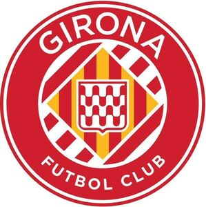

Trade Mark Journal No.2025/034 22 August 2025
WO0000001869264 (18,25,41)
Office of origin: European Union Intellectual Property Office (EUIPO)

The mark contains the colours RED: CMYK: C12% M100% Y81% K3%; WHITE: CMYK: C0% M0% Y0% K0%; YELLOW: CMYK: C0% M31% Y97% K0% RED: CMYK: C: 12% M: 100% Y: 81% K: 3%; WHITE: CMYK: C: 0% M: 0% Y: 0% K: 0%; YELLOW: CMYK: C: 0% M: 31% Y: 97% K: 0%The mark consists of the design of a red circle outlined by two lines: one white (CMYK: C: 0% M: 0% Y: 0% K: 0%) and one red (CMYK: C: 12% M: 100% Y: 81% K: 3%). The circle contains the word “GIRONA” in capital letters at the top and the words: “FUTBOL CLUB” in smaller capital letters at the bottom, all written in white (CMYK: C: 0% M: 0% Y: 0% K: 0%). In the center, there is another circle containing five red diagonal stripes (CMYK: C: 12% M: 100% Y: 81% K: 3% ) on a white background (CMYK: C: 0% M: 0% Y: 0% K: 0% K: 0%) and a central rhombus outlined in white (CMYK: C: 0% M: 0% Y: 0% K: 0%) with four red vertical stripes (CMYK: C: 12% M: 100% Y: 81% K: 3% ) on a yellow background (CMYK: C: 0% M: 31% Y: 97% K: 0% ). In the center of the rhombus, there is a red square outlined in white (CMYK: C: 0% M: 0% Y: 0% K: 0%) with rounded bottom edge comers that ends in a point at the bottom center. Inside, red wavy lines (CMYK: C: 12% M: 100% Y: 81% K: 3% ) appear on a white background (CMYK: C: 0% M: 0% Y: 0% K: 0%)
- Class 18
- Leather and imitations of leather; animal skins and hides; luggage and carrying bags; umbrellas and parasols; walking sticks; whips, harness and saddlery; collars, leashes and clothing for animals; bags for campers; handbag frames; frames for umbrellas or parasols; parasols; mountaineering sticks; bags for sports; net bags for shopping; travelling bags; bags (envelopes, pouches) of leather for packaging; handbags; bags; travelling sets (leatherware); key cases; attaché cases; coin purses, not of precious metal; imitation leather hat boxes; leather backpacks for carrying infants; wheeled shopping bags; boxes of leather or leatherboard; card cases (notecases); pocket wallets; school bags; vanity cases, not fitted; umbrella covers; rucksacks; re-usable shopping bags; suitcases; moleskin (imitation leather); card cases.
- Class 25
- Clothing, footwear, headwear; scarves; tee-shirts; sweatshirts.
- Class 41
- Education; training; entertainment services; sporting and cultural activities; sports club services; organizing of exhibitions for entertainment, cultural or educational purposes; organization and conducting of entertainment, cultural or educational events, competitions, tournaments and sporting activities; organization of soccer games; organization of football events; conducting educational events; conducting entertainment events; organization of live performances; entertainment in the nature of football games; wedding celebrations (organization of entertainment for -); providing sports facilities; publication of texts, other than publicity texts; production of radio and television programmes; providing museum facilities [presentation, exhibitions]; organizing, planning and conducting congresses, conferences, workshops, or seminars; booking services for sporting events tickets; ticket information services for sporting events; ticket sales agency services for sporting events; providing ticket collection services at the ticket counter for sporting, cultural and leisure events; education information; entertainment information; game services provided on-line from a computer network; recreation information; arranging of contests (education or entertainment); rental of sports grounds; rental of stadium facilities; rental of grandstands; entertainment services, namely, entertainment services provided in virtual environments in which users can interact for recreational purposes; entertainment services provided in an online environment with entertainment content broadcasting; entertainment services, namely, providing an online environment for conducting sporting events; entertainment services, namely, preparation, organization and hosting of sporting and social events.
GIRONA FUTBOL CLUB S.A.D.
Representative: DURÁN - CORRETJER, S.L.P., Còrsega, 329 (Pº de Gracia/Diagonal), E-08037 Barcelona, SPAIN